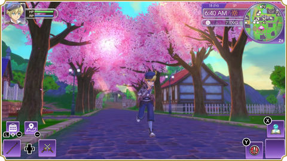
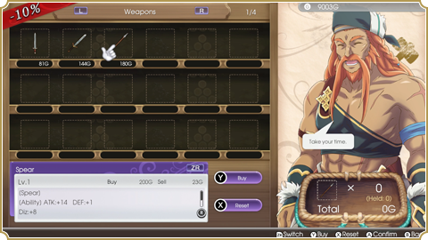
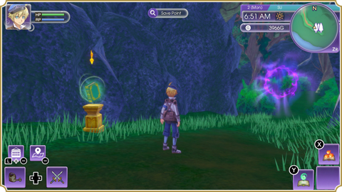
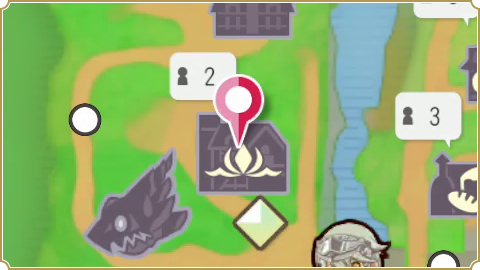
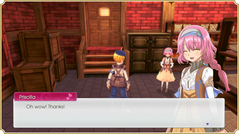

The protagonist begins a new life in Rigbarth as a SEED ranger. Your everyday activities include farming your fields, completing requests for the townsfolk, and rounding up unruly monsters. Enjoy the game at your own pace and make Rigbarth a better place for everyone.

Exchange your hard-earned gold (G) for goods and services at Rigbarth’s various businesses, including the smithy, restaurant, and inn. When buying equipment, you can check how your new purchases will affect your current stats.

Each day lasts 24 hours, every year has four seasons (Spring, Summer, Autumn, Winter), and the weather comes in nine varieties. All businesses have their own operating hours, and the types of crops you can grow change every season.
Travel beyond Rigbarth’s walls to explore forests and caves located throughout the region. Each area has different materials to collect, monsters to fight or befriend, and dungeons to find. Unlock more dungeons by advancing the story.

Important story-related events will occur wherever you see a red pin on your map, so make sure to visit these locations as soon as possible.

Forge friendships with Rigbarth’s residents by striking up conversations and going on adventures together. If one of the twelve marriage candidates catches your eye, raise your friendship level high enough to ask them out on a date. Maybe you’ll end up tying the knot someday!

Many fascinating individuals call Rigbarth home. Make friends with everyone to experience their story events and invite them all on adventures!
The townsfolk have their own schedules, so you’ll often see them heading to work or taking walks. Use the map to check their current locations.